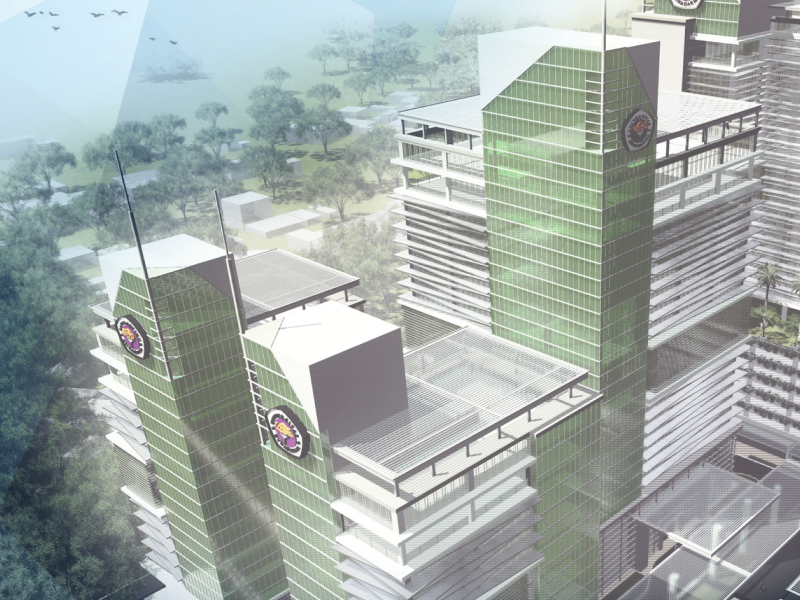

Universitas Gunadarma
Universitas Gunadarma merupakan Perguruan Tinggi Swasta (PTS) berdiri pada tanggal 3 April 1996. Universitas yang dikenal dengan sebutan Gundar ini merupakan salah satu universitas swasta berbasis teknologi dan komunikasi yang mengacu pada tata kelola good university governance. Berdiri dengan nama “Universitas Gunadarma”, Perguruan Tinggi ini awalnya merupakan Program Pendidikan Ilmu Komputer (PPIK) Jakarta yang berdiri pada 7 Agustus 1981. Tiga tahun kemudian, berganti nama menjadi Sekolah Tinggi Manajemen Informatika dan Komputer (STMIK) Gunadarma. Setelah itu berdirilah Sekolah Tinggi Ilmu Ekonomi (STIE) Gunadarma pada tahun 1990, tepatnya tanggal 13 Januari 1990.
Lambang Universitas Gunadarma memiliki arti di setiap komponennya. Untuk melambangkan keteguhan hati menyumbangkan dharma bakti kepada nusa dan bangsa dilambangken dengan tangkai obor yang berdiri tegak. Kemudian terdapat cawan obor yang cekung dan melebar untuk melambangkan wadah dari ilmu pengetahuan yang luas dan mendalam. Untuk menunjukkan semangat juang yang tak pernah padam dalam menuntut ilmu dan menyumbangkan kepada masyarakat dilambangkan dengan kobaran api berwarna kuning keemasan.
